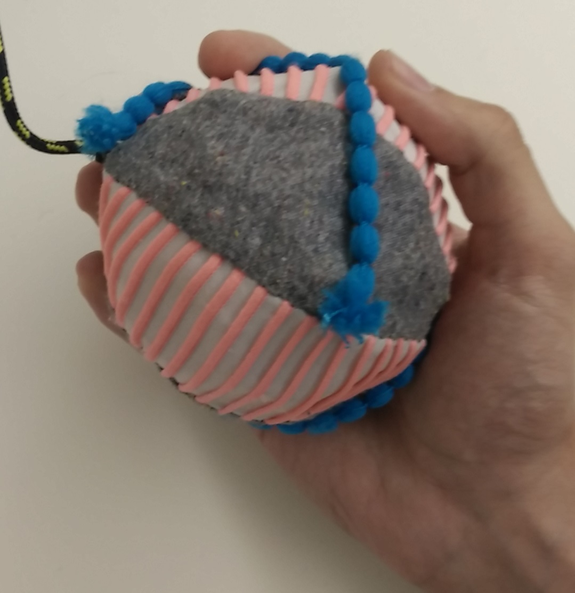
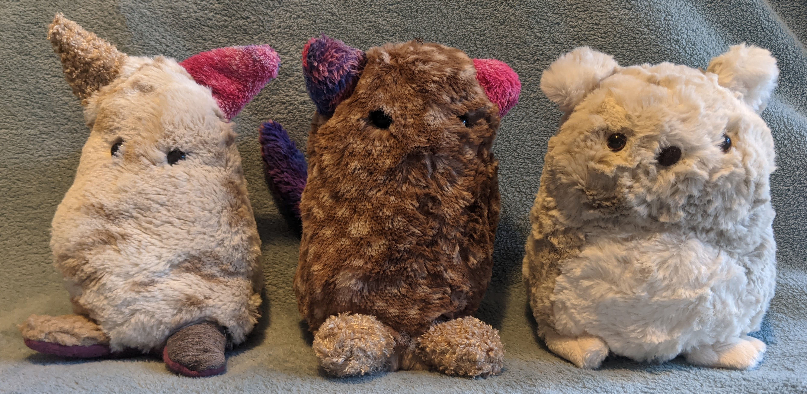
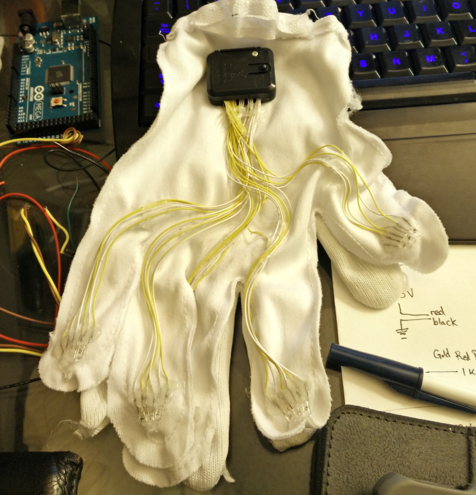
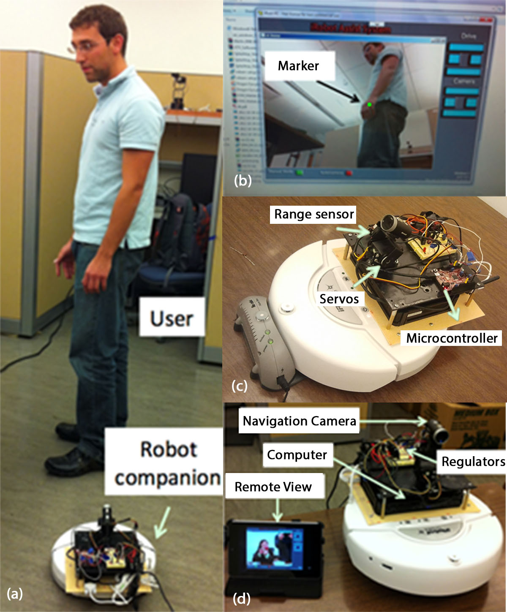

Research Projects
For a list of publications see my Google Scholar page.
2017-2021 -- Fidget Ball for ADHD Intervention
Fidgeting is a natural phenomenon but fidgeting under observation is not. This long running project was developed out of work first started at NYU by Kathine Isbister. We started on a suite of tools to allow tracing and interpreting fidgeting behavior in the wild through soft objects with embedded sensors. We use a mixture of custom made and market ready sensors in deformable bodies for more comfortable usage by participants in the wild and in controlled laboratory settings. This data can then be interpreted by therapists, researchers or doctors depending on the usage. I acted as the hardware and software lead for the project, developing connections between microcontrollers and sensors.
Our partnership with both a machine learning researcher to help interpret the large-scale data set and the MIND institue at UC Davis allowed us to structure our device apporiately so that eventually we'd be able to interpret the data in real-time, and provide prompts to users when their absent minded fidgeting had progressed from helpful regulation to distraction. The project is currently under an NIH grant and is in full scale clinical trial to test efficacy.
Shapiro, D., Zhan, Z., Cottrell, P., & Isbister, K. 2019. Translating Affective Touch into Text. In Proceedings of Confrence on Human Factors in Computing (CHI 2019).
Cottrell, P., Grow, A., & Isbister, K. 2018. Soft-bodied Fidget Toys: A Materials Exploration. In Proceedings of the Twelfth International Conference on Tangible, Embedded, and Embodied Interaction (TEI '18). pg. 42-48. DOI: https://doi.org/10.1145/3173225.3173266
2017-2020 -- Soft-bodied Worry Pet for Structured Self-Soothing in Children
Helping to intervene in the anxiety cycle can help young children learn to self-regulate but trying to find the right device and time to intervene can be difficult. Developed in parallel to the fidgeting device and with similar methods with different aims. We used a mixture of custom made and market ready sensors in deformable bodies. These embedded sensors help therapists determine interaction time and frequency in the wild and can help strucure future discussions.
I acted as the hardware and software lead for the project, developing communications between microcontrollers and sensors. For published information on initial results from the project see the publications below, the ToCHI article is the most complete account of the project development.
These articles follow the multidisiplinary team from early development of potential designs and smart material investigations through the hand off to commercial production with Sproutel. I worked as the legacy researcher for 4 years helping to keep a throughline on the product while it was at UCSC and during the hand-off to the commercial team. I worked machine learning experts to attempt to process the data on a larger scale and develop wider trends from across the population. I also supported the user studies and performed data analysis after our team of child psycologists depolyed the device in the wild to investigate the effect on the target population.
The commerical product Purrble has been highlighted in Time Magazine's "Best Inventions of 2021", and featured on QVC.
Isbister, K., Cottrell, P., Cecchet, A., Dagan, E., Theofanpoulou, N., Altarriba Bertran, F., Horowitz, A., Mead, N., Schwarz, J., & Slovak, P. 2022. Design not Lost in Translation: A Case Study of an Intimate-Space Socially Assistive Robot for Emotion Regulation In Review for publication in ToCHI 2022.
Slovak, P., Theofanpoulou, N., Cecchet, A., Cottrell, P., Altarriba Bertran, F., Dagan, E., Childs, J. & Isbister, K. 2018. "I just let him cry..." Designing Socio-Technical Interventions in Families to Prevent Mental Health Disorders. In Proceedings of the ACM on Human-Computer Interaction. pg. 1-34.
2015-2017 -- Soft-Robot Gloves for Stroke Survivors Fine Motor Skill Rehabilitation
An ongoing issue that stroke survivors face years after their incident are tremors. After performing expert interviews with physical therapists and recovery patients alike they mentioned this as a primary annoyance.
In an attempt to counteract tremors in patient's hands we used piezoresistive plastics along the length of the fingers to help strech, resist and counter to the user's tremor. After initial prototypes were developed and similar technology was being developed concurrently at MIT, we decided to pivot to alternative therapies for stroke rehabilitation.
While the work remains unpublished, we pivoted to developing an at-home daily exercise device for early non-invasive intervention for stroke survivors.
Cottrell, P., Kurniawan, S., Teoderescu, M. 2016. Personalized intelligent prosthesis for tremor suppression. SIGACCESS Access. Comput. 114 (March 2016), 25-28. DOI: http://dx.doi.org/10.1145/2904092.2904098
2012-2013 -- Live-in ASSistant for Independence and Elder-care (LASSIE)
LASSIE was a tele-operated robot with capabilities for vital sign detection I helped develop as part of my undergraduate thesis project, under the guidance of a graduate student Sebastian Hening.
This robot was designed with older people living alone in mind to help determine the condition of the user and what level of emergency services were needed if any after a fall was detected. I helped retool an FFT algorithm to read heart and breath rates from a low-cost web camera, and extrapolate if these rates were outside of a normal range. I ended my undergraduate career with decent success on the LASSIE robot; we found that our modified algorithm was able to detect a heart rate with a 70% success rate. I also was awarded 1st place in “IT for Society” division of Big Ideas@Berkley competition for the LASSIE project, I Received Dean’s and Chancellor's Award for Outstanding Undergraduate Research. I also had the opportunity to present our findings at the PETRA 2013 conference in Greece.
Hening, S., Cottrell, P., Teoderescu, M., Kurniawan, S. and Mantey, P. 2013. Assistive living robot: a remotely controlled robot for older persons living alone. In Proceedings of the 6th International Conference on PErvasive Technologies Related to Assistive Environments (PETRA '13). ACM, New York, NY, USA, , Article 10 , 4 pages. DOI: http://dx.doi.org/10.1145/2504335.2504345
Additional Research and Internships
Companion Labs Internship - Spring 2020
Right as the Covid-19 pandemic arrived in the US in March of 2020, I began helping to Beta test the Companion dog training device, advising on how pet parents were interacting with the device at home and what information they required to properly interface with the device for effective dog training.
The intership allowed me to interact with several investors and personally introduce them to the AI driven pet training device to entice them to invest in the next stage of depolyment as the company pivoted from in-shelter deployment to at-home devices.
Blind Formatting Tool - 2014
My work also included devloping the website and pet-parent facing advice pages.
While not my project directly I helped in the documentation of a tool for blind users to format their documents that my labmate developed.
Morales, L. M., Arteaga, S. M., Cottrell, P., & Kurniawan, S. (2014). Design Guidelines of Tools for Facilitating Blind People to Independently Format Their Documents. In Computers Helping People with Special Needs (pp. 634-641). Springer International Publishing.
Toyota ITC Internship - Spring 2014
During the spring of 2014, I spent 3 months conducting interviews and performing paper reviews at Toyota ITC, investigating the use of Robotics in the world of Health Care and how we might improve robot to human hand-over techniques in hospice settings.
Patents
Martinson, E., Cottrell, P. 2020. Gait Analysis Medical Assistance Robot. US Patent 10383552